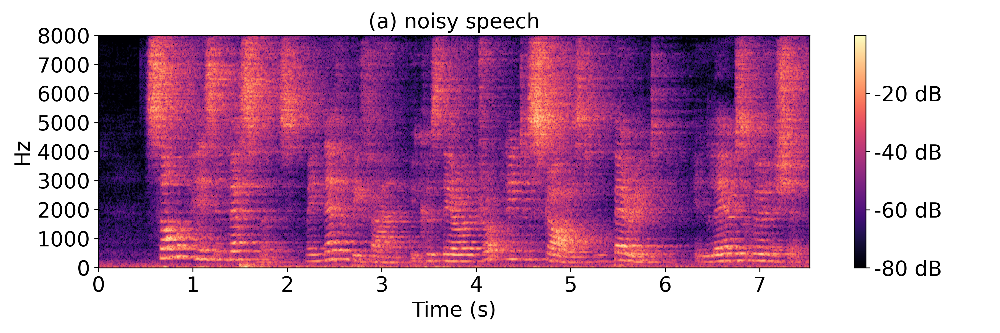
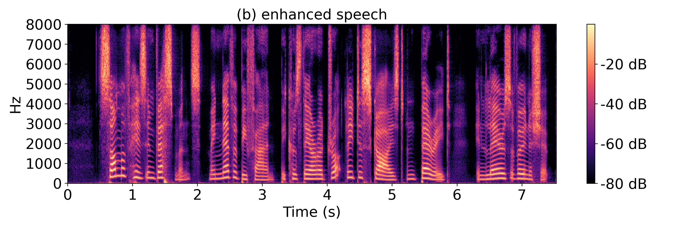
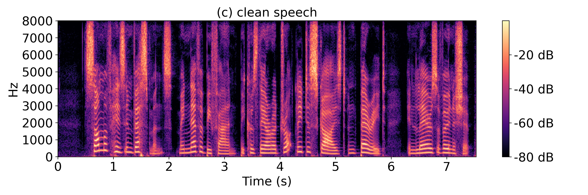

Speech Dereverberation (4-ch. spatialized wsjcam0 dataset)



Authors: Dongheon Lee and Jung-Woo Choi
Abstract: In this work, we present DeFTAN-II, an efficient multichannel speech enhancement model based on transformer architecture and subgroup processing. Despite the success of transformers in speech enhancement, they face challenges in capturing local relations, reducing the high computational complexity, and lowering memory usage. To address these limitations, we introduce subgroup processing in our model, combining subgroups of locally emphasized features with other subgroups containing original features. The subgroup processing is implemented in several blocks of the proposed network. In the proposed split dense blocks extracting spatial features, a pair of subgroups is sequentially concatenated and processed by convolution layers to effectively reduce the computational complexity and memory usage. For the F- and T-transformers extracting temporal and spectral relations, we introduce crossattention between subgroups to identify relationships between locally emphasized and non-emphasized features. The dualpath feedforward network then aggregates attended features in terms of the gating of local features processed by dilated convolutions. Through extensive comparisons with state-of-the-art multichannel speech enhancement models, we demonstrate that DeFTAN-II with subgroup processing outperforms existing methods at significantly lower computational complexity. Moreover, we evaluate the model’s generalization capability on realworld data without fine-tuning, which further demonstrates its effectiveness in practical scenarios.
Contents: We provide one sound demo for each of the following tasks (and datasets):
- Speech Dereverberation (4-ch. spatialized wsjcam0 dataset)
- Noisy Reverberant Speech Enhancement (4-ch. spatialized DNS challenge dataset)
- Reverberant Speech Separation (4-ch. spatialized wsj0-2mix dataset)
- Real-world Speech Enhancement (6-ch. CHiME-3 real dataset)
- Egocentric Speech Enhancement (4-ch. EasyCom)